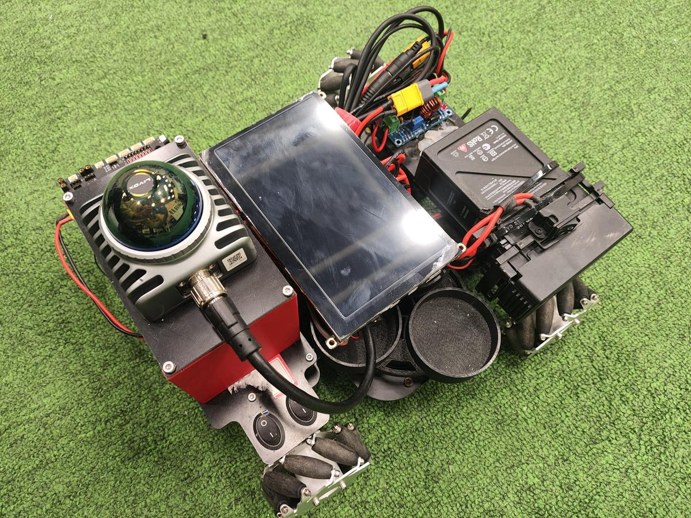
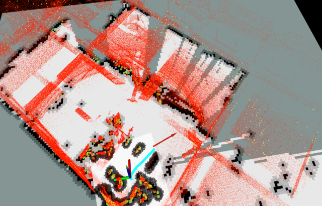
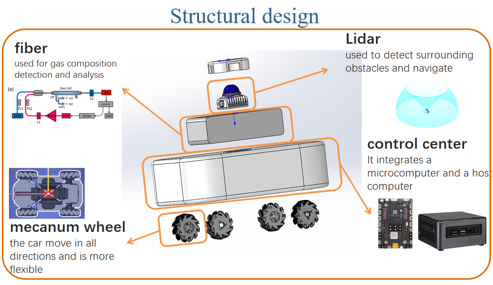
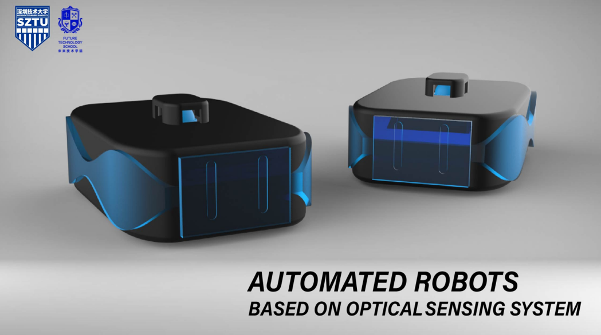

💡 单击图片查看完整图片
基于MID360激光雷达的自主导航机器人，具备高精度环境感知与动态路径规划能力，适用于室内复杂场景下的全自主移动与避障任务。
作为项目负责人，本人全面负责机器人的系统架构设计与核心算法开发。
该项目实现了从感知到决策再到执行的完整自主导航系统。通过FAST-LIO算法提供高精度定位，结合多层次路径规划策略，机器人能够在复杂动态环境中稳定、安全地完成导航任务。
在动态障碍物环境中，传统路径规划算法容易出现震荡或卡死。通过融合TEB与DWA算法，并优化参数配置，实现了平滑、稳定的动态避障效果。同时，麦克纳姆轮底盘的全向移动特性为复杂环境下的灵活避障提供了硬件基础。
通过上述技术集成与系统调试，机器人成功实现了在复杂室内环境中的稳定、精准自主导航，各项性能指标均达到或超过项目预期。此项目获得深圳技术大学"优秀项目"称号。